1. General Provisions
-
1.1. Purpose of the Document
This report is made to ensure the continuity of business processes, preserve and share internal organization expertise within the Group, as well as to prove the feasibility and validity of the developed model.
To achieve the goals, the Report provides insights into some essential methodological approaches to modeling.
-
1.2. Goals and Tasks which Require Building a Model
-
___ЦЕЛЬ ПОСТРОЕНИЯ МОДЕЛИ___
-
-
1.3. Document Structure
- Section Model structure contains model description: features, coefficients of the regression model, splitting features into bins.
- Section Validation tests contains information about validation tests.
The report has the following structure:
-
1.4. Model Summary
Key model identifiers are given in Table 1.
Table 1. Model identifiers
Parameter Value Model name / ID ___НАЗВАНИЕ МОДЕЛИ___ Report version 1 Model customer ___ЗАКАЗЧИК___ Name of the Group member and high level department ___ПОДРАЗДЕЛЕНИЕ___ Model developer (if an external developer is involved, it is necessary to indicate Company's name) ___РАЗРАБОТЧИК МОДЕЛИ___ Description and specification of datasets that are used to develop and test the model are presented in Table 2.
Table 2. Summary of data sets used to build the model
Parameter Training set Test set Target event description ___ОПИСАНИЕ ЦЕЛЕВОГО СОБЫТИЯ___ Non-target event description ___ОПИСАНИЕ НЕЦЕЛЕВОГО СОБЫТИЯ___ Observations count in sets 7000 3000 Target events count 75 15 Non-target events count 6925 2985 Mean of target in sets 1.07% 0.50% Predictions of the model trained on the training set are shown in Table 3.
Table 3. Model predictions (trained using the training set)
Parameter Training set Test set AUC 83.76% 79.11% Gini 67.51% 58.23% 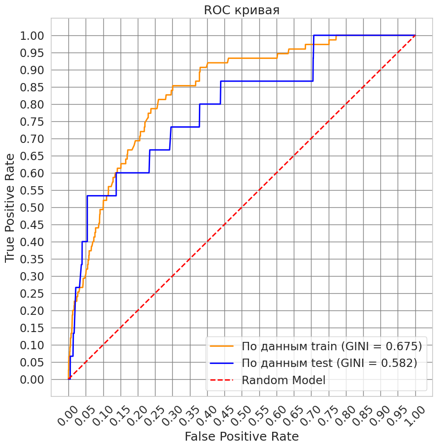
2. Model Structure
-
2.1. Coefficients of the Regression Model
Coefficients of the regression model are shown in Table 4.
Table 4. Coefficients of the regression model
Feature name Regression coefficient datetime_1__F__d -1.232442 number_368 -1.062441 number_1 -1.044868 number_761 -0.894294 number_759 -0.763258 number_345 -0.707849 number_706 -0.648337 number_254 -0.48753 number_10 -0.475665 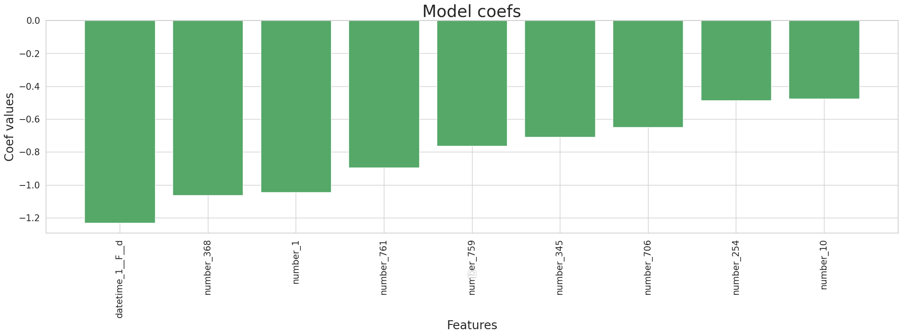
-
2.2. Splitting Features into Bins and WoE Values in them


3. Validation Tests
-
3.1. Differences in the Number of Missing Values between Training and Test Sets
Statistics related to the number of missing values between training and test sets are shown in Table 5.
Table 5. Missing values
Feature name Number of valid values in the training set Number of valid values in the test set Number of missing values in the training set Number of missing values in the test set Percentage of valid values in the training set Percentage of valid values in the test set Difference in percentage of valid values in sets datetime_1 7000 3000 0 0 0.00 0.00 0.00 number_368 6625 2977 375 23 5.36 0.77 4.59 number_1 7000 3000 0 0 0.00 0.00 0.00 number_761 7000 3000 0 0 0.00 0.00 0.00 number_759 7000 3000 0 0 0.00 0.00 0.00 number_345 7000 3000 0 0 0.00 0.00 0.00 number_706 6937 2976 63 24 0.90 0.80 0.10 number_254 6175 2688 825 312 11.79 10.40 1.39 number_10 6175 2688 825 312 11.79 10.40 1.39 -
3.2. Classification Quality for Each of the Final Model's features


-
3.3. Confidence Interval for Gini Index
-
95% confidence interval for Gini index:
- - In the training set: (0.591, 0.761)
- - In the test set: (0.31, 0.816)
-
3.4. P-value for Model Coefficients
For features in training set:
Feature name P-value number_10 0.03001 number_254 0.013034 number_706 0.006792 number_345 0.004663 datetime_1__F__d 0.003993 number_1 0.001364 number_759 0.001166 number_761 0.000357 number_368 6e-06 Intercept_ 0.0 For features in the test set:
Feature name P-value number_368 0.996059 Intercept_ 0.985228 datetime_1__F__d 0.817816 number_345 0.764786 number_254 0.702094 number_759 0.627743 number_761 0.314312 number_706 0.215342 number_1 0.061967 number_10 0.005404 -
3.5. One-dimensional Analysis
Gini for the training set

Gini for the test set
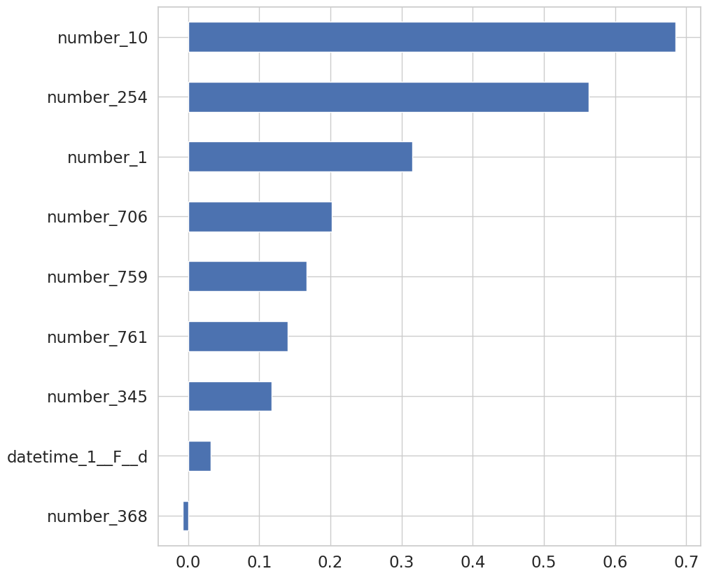
-
3.6. Check for Monotony


-
3.7. Check for Backlash


-
3.8. Check for VIF
Feature name VIF value number_10 1.212498 number_254 1.158593 number_345 1.105157 number_1 1.104316 number_706 1.052363 number_761 1.02766 number_759 1.025724 number_368 1.010745 datetime_1__F__d 1.000883 -
3.9. PSI
Total PSI
Feature name PSI value number_368 0.198 number_761 0.172922 datetime_1__F__d 0.129011 number_759 0.036785 number_254 0.025889 number_345 0.010281 number_10 0.00279 number_1 0.002744 number_706 0.002689 PSI for non-target events
Feature name PSI value number_368 0.192064 number_761 0.170573 datetime_1__F__d 0.127143 number_759 0.036917 number_254 0.027828 number_345 0.009849 number_10 0.003247 number_1 0.002971 number_706 0.002962 PSI for target events
Feature name PSI value datetime_1__F__d 1.672066 number_368 1.159261 number_761 0.82684 number_254 0.681203 number_1 0.672777 number_10 0.648129 number_759 0.552256 number_345 0.37706 number_706 0.047097 Grouping by predictions on the training set (total)
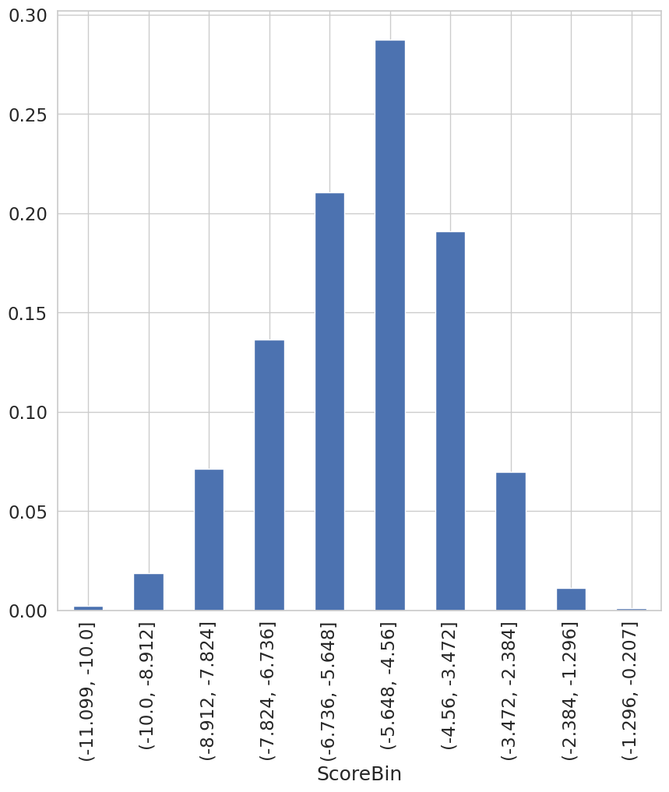
Grouping by predictions of target and non-target events on the training set
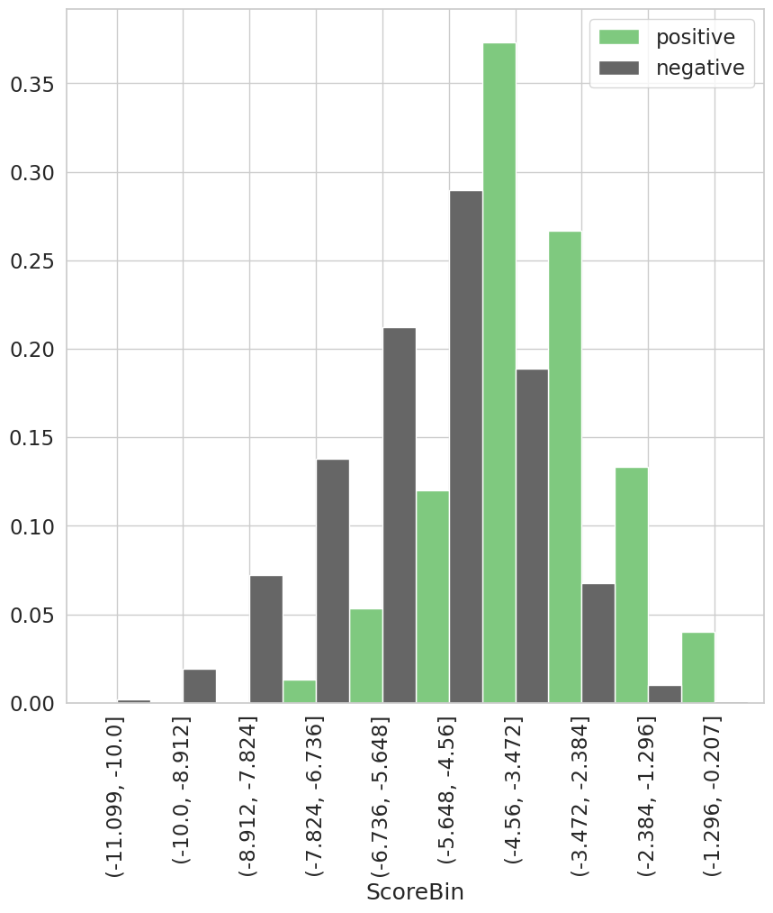
Grouping by predictions on the test set (total)
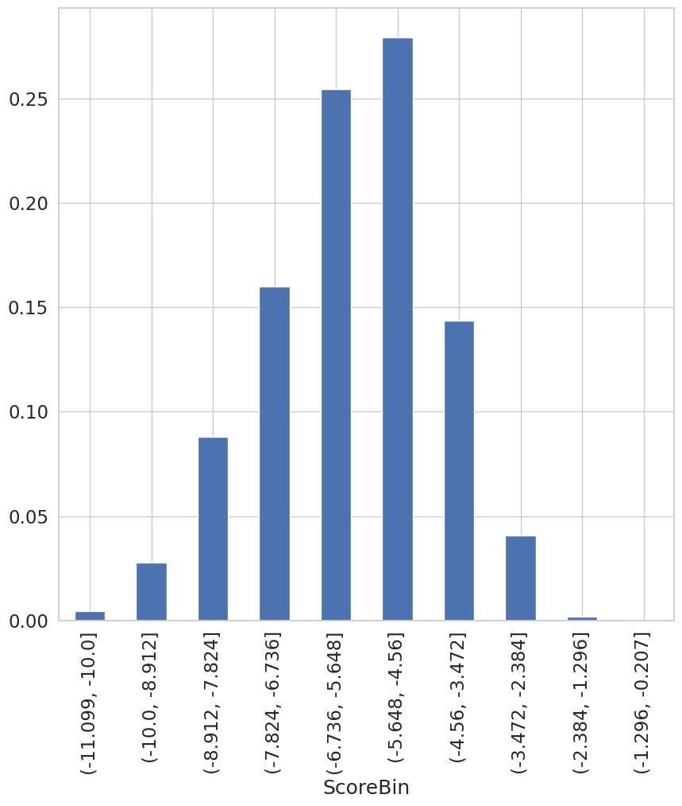
Grouping by predictions of target and non-target events on the test set
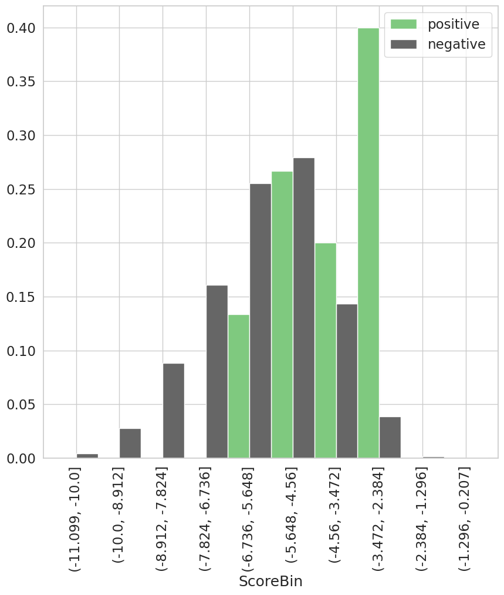
PSI by grouped predictions of model
Total PSI 0.063908 PSI for non-target events 0.059212 PSI for target events 1.187964
4. Additional Reports
-
4.1. Prediction Bin Statistics
Mean value of the target on the training and test set
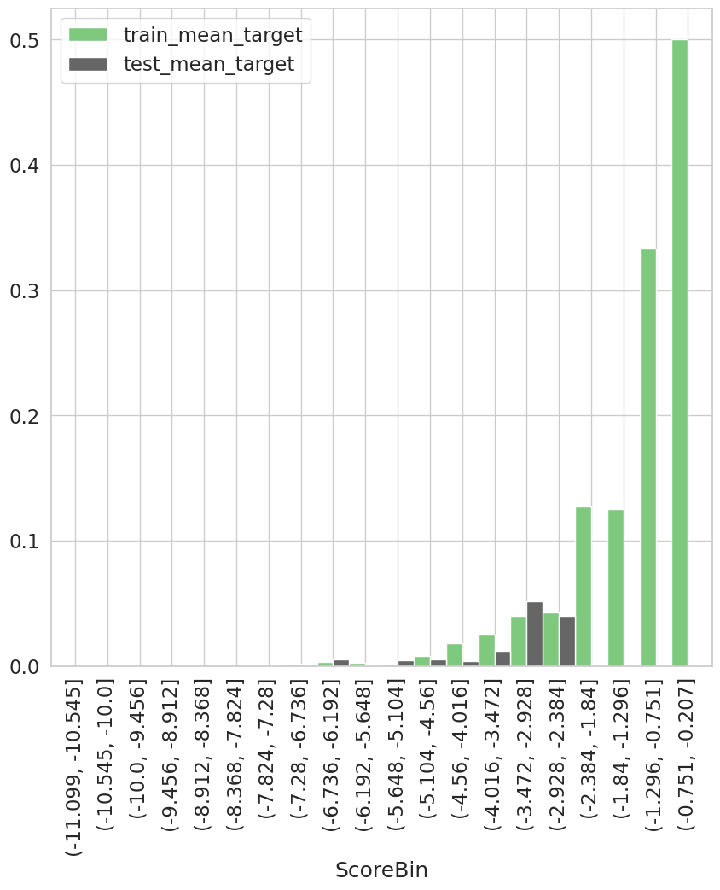
Prediction statistics for the training set
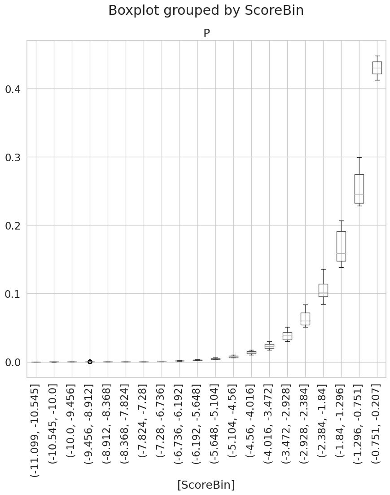
ScoreBin count mean std min 25% 50% 75% max (-11.099, -10.545] 9.0 0.0 0.0 0.0 0.0 0.0 0.0 0.0 (-10.545, -10.0] 6.0 0.0 0.0 0.0 0.0 0.0 0.0 0.0 (-10.0, -9.456] 36.0 0.0001 0.0 0.0001 0.0001 0.0001 0.0001 0.0001 (-9.456, -8.912] 96.0 0.0001 0.0 0.0001 0.0001 0.0001 0.0001 0.0001 (-8.912, -8.368] 196.0 0.0002 0.0 0.0001 0.0002 0.0002 0.0002 0.0002 (-8.368, -7.824] 303.0 0.0003 0.0001 0.0002 0.0003 0.0003 0.0004 0.0004 (-7.824, -7.28] 440.0 0.0005 0.0001 0.0004 0.0005 0.0006 0.0006 0.0007 (-7.28, -6.736] 515.0 0.0009 0.0001 0.0007 0.0008 0.001 0.0011 0.0012 (-6.736, -6.192] 707.0 0.0016 0.0002 0.0012 0.0014 0.0016 0.0018 0.002 (-6.192, -5.648] 767.0 0.0027 0.0004 0.0021 0.0024 0.0027 0.003 0.0035 (-5.648, -5.104] 977.0 0.0046 0.0007 0.0035 0.004 0.0046 0.005 0.006 (-5.104, -4.56] 1036.0 0.0079 0.0012 0.006 0.0066 0.008 0.0088 0.0104 (-4.56, -4.016] 781.0 0.0138 0.002 0.0104 0.0121 0.0137 0.0153 0.0177 (-4.016, -3.472] 556.0 0.0232 0.0036 0.0177 0.02 0.0228 0.0258 0.03 (-3.472, -2.928] 324.0 0.0385 0.0062 0.0301 0.0323 0.0387 0.0429 0.0508 (-2.928, -2.384] 164.0 0.0632 0.0103 0.0508 0.054 0.0601 0.0717 0.0838 (-2.384, -1.84] 63.0 0.1058 0.0146 0.0847 0.0954 0.1025 0.1138 0.136 (-1.84, -1.296] 16.0 0.1686 0.0252 0.1385 0.1478 0.1587 0.1909 0.2068 (-1.296, -0.751] 6.0 0.2554 0.0293 0.2284 0.2326 0.246 0.2747 0.2996 (-0.751, -0.207] 2.0 0.4306 0.0251 0.4128 0.4217 0.4306 0.4394 0.4483 Prediction statistics for the test set
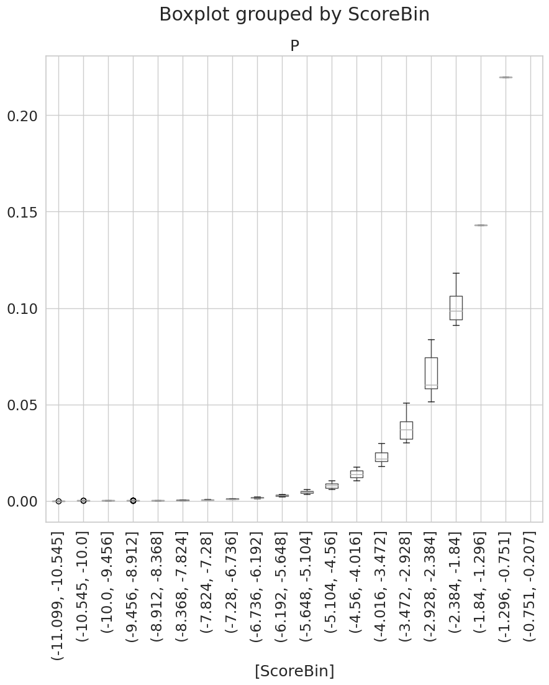
ScoreBin count mean std min 25% 50% 75% max (-11.099, -10.545] 4.0 0.0 0.0 0.0 0.0 0.0 0.0 0.0 (-10.545, -10.0] 9.0 0.0 0.0 0.0 0.0 0.0 0.0 0.0 (-10.0, -9.456] 24.0 0.0001 0.0 0.0001 0.0001 0.0001 0.0001 0.0001 (-9.456, -8.912] 59.0 0.0001 0.0 0.0001 0.0001 0.0001 0.0001 0.0001 (-8.912, -8.368] 100.0 0.0002 0.0 0.0001 0.0002 0.0002 0.0002 0.0002 (-8.368, -7.824] 164.0 0.0003 0.0001 0.0002 0.0003 0.0003 0.0004 0.0004 (-7.824, -7.28] 226.0 0.0005 0.0001 0.0004 0.0005 0.0006 0.0006 0.0007 (-7.28, -6.736] 254.0 0.0009 0.0001 0.0007 0.0008 0.0009 0.001 0.0012 (-6.736, -6.192] 377.0 0.0016 0.0002 0.0012 0.0014 0.0016 0.0018 0.002 (-6.192, -5.648] 386.0 0.0027 0.0004 0.002 0.0023 0.0027 0.003 0.0034 (-5.648, -5.104] 428.0 0.0046 0.0006 0.0035 0.004 0.0046 0.005 0.006 (-5.104, -4.56] 410.0 0.0078 0.0013 0.0061 0.0065 0.0079 0.0088 0.0103 (-4.56, -4.016] 261.0 0.0139 0.0021 0.0104 0.0122 0.0138 0.0155 0.0177 (-4.016, -3.472] 170.0 0.023 0.0032 0.0178 0.0206 0.0217 0.0252 0.0297 (-3.472, -2.928] 97.0 0.0383 0.0065 0.0302 0.032 0.0369 0.0412 0.0508 (-2.928, -2.384] 25.0 0.0657 0.0107 0.0515 0.0584 0.06 0.0745 0.0838 (-2.384, -1.84] 4.0 0.1016 0.012 0.091 0.094 0.0986 0.1063 0.1183 (-1.84, -1.296] 1.0 0.1431 nan 0.1431 0.1431 0.1431 0.1431 0.1431 (-1.296, -0.751] 1.0 0.2199 nan 0.2199 0.2199 0.2199 0.2199 0.2199 (-0.751, -0.207] 0.0 nan nan nan nan nan nan nan -
4.2. Correlations by Factors Included in the Model
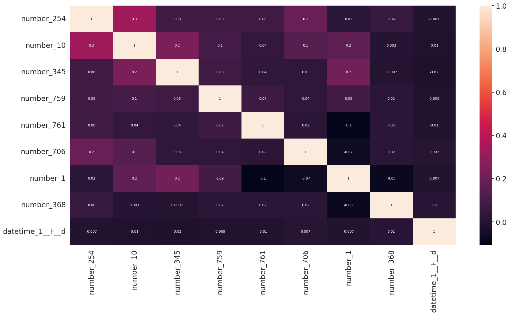
-
4.3. Scorecard
- __NaN__ - separate group with WoE evaluation
- __NaN_0__ - separate group with WoE = 0
- __NaN_maxfreq__ - added to the most frequent group without WoE evaluation
- __NaN_maxp__ - added to the group with maximum probability without WoE evaluation
- __NaN_minp__ - added to the group with minimum probability without WoE evaluation
- __Small__ - separate group with WoE evaluation
- __Small_nan__ - to the NaN group
- __Small_0__ - separate group with WoE = 0
- __Small_maxfreq__ - added to the most frequent group without WoE evaluation
- __Small_maxp__ - added to the group with maximum probability without WoE evaluation
- __Small_minp__ - added to the group with minimum probability without WoE evaluation
Variable Value WOE COEF POINTS Intercept None None -4.55 -4.55 number_254 number_254 <= 0.2 -0.4 -0.49 0.2 number_254 0.2 < number_254 <= 0.83 0.56 -0.49 -0.27 number_254 number_254 > 0.83 1.63 -0.49 -0.79 number_254 __NaN__ -0.97 -0.49 0.47 number_10 number_10 <= 28891.5 -0.17 -0.48 0.08 number_10 28891.5 < number_10 <= 38896.0 0.16 -0.48 -0.08 number_10 38896.0 < number_10 <= 222059.5 0.32 -0.48 -0.15 number_10 number_10 > 222059.5 3.24 -0.48 -1.54 number_10 __NaN__ -0.97 -0.48 0.46 number_345 number_345 <= 35049.5 -0.55 -0.71 0.39 number_345 35049.5 < number_345 <= 157021.5 -0.23 -0.71 0.17 number_345 157021.5 < number_345 <= 250500.0 0.55 -0.71 -0.39 number_345 number_345 > 250500.0 1.7 -0.71 -1.2 number_345 __NaN_0__ 0 -0.71 0.0 number_759 number_759 <= -0.3 -1.4 -0.76 1.07 number_759 -0.3 < number_759 <= 0.24 -0.21 -0.76 0.16 number_759 0.24 < number_759 <= 1.02 0.41 -0.76 -0.31 number_759 number_759 > 1.02 1.07 -0.76 -0.82 number_759 __NaN_0__ 0 -0.76 0.0 number_761 number_761 <= -0.21 -1.11 -0.89 0.99 number_761 -0.21 < number_761 <= 2.48 -0.22 -0.89 0.2 number_761 number_761 > 2.48 0.33 -0.89 -0.3 number_761 __NaN_0__ 0 -0.89 0.0 number_706 number_706 <= 1.5 0.22 -0.65 -0.14 number_706 number_706 > 1.5 -0.94 -0.65 0.61 number_706 __NaN__ -0.4 -0.65 0.26 number_1 number_1 <= 56.5 0.21 -1.04 -0.22 number_1 56.5 < number_1 <= 58.5 -0.23 -1.04 0.24 number_1 58.5 < number_1 <= 60.5 -0.42 -1.04 0.44 number_1 number_1 > 60.5 -0.77 -1.04 0.8 number_1 __NaN_0__ 0 -1.04 0.0 number_368 number_368 <= 1.5 0.18 -1.06 -0.19 number_368 1.5 < number_368 <= 2.5 -0.69 -1.06 0.73 number_368 number_368 > 2.5 -1.31 -1.06 1.39 number_368 __NaN__ -0.93 -1.06 0.99 datetime_1__F__d datetime_1__F__d <= 1.5 -0.47 -1.23 0.58 datetime_1__F__d 1.5 < datetime_1__F__d <= 26.5 0.03 -1.23 -0.03 datetime_1__F__d 26.5 < datetime_1__F__d <= 28.5 0.37 -1.23 -0.46 datetime_1__F__d datetime_1__F__d > 28.5 1.08 -1.23 -1.33 datetime_1__F__d __NaN_0__ 0 -1.23 0.0
Missing values processing legend:
Rare/unknown category processing legend: -
4.4. Feature Selection History
Feature datetime_0__F__d Pruned during regression refit datetime_0__F__wd Pruned during regression refit datetime_1__F__d Selected; Gini = 0.14, IV = 0.11 datetime_1__F__wd Pruned during regression refit number_0 Low importance number_1 Selected; Gini = 0.16, IV = 0.12 number_10 Selected; Gini = 0.37, IV = 0.78 number_100 NaN values number_101 NaN values number_102 Low importance number_103 Pruned during regression refit number_104 Low importance number_105 NaN values number_106 Low importance number_107 Low importance number_108 Low importance number_109 Low importance number_11 Pruned during regression refit number_110 Low importance number_111 Low importance number_112 Low importance number_113 NaN values number_114 Low importance number_115 NaN values number_116 NaN values number_117 NaN values number_118 NaN values number_119 NaN values number_12 Low importance number_120 NaN values number_121 NaN values number_122 NaN values number_123 NaN values number_124 NaN values number_125 NaN values number_126 NaN values number_127 NaN values number_128 NaN values number_129 NaN values number_13 Pruned during regression refit number_130 Low importance number_131 NaN values number_132 NaN values number_133 NaN values number_134 NaN values number_135 NaN values number_136 Pruned during regression refit number_137 Low importance number_138 Low importance number_139 Low importance number_14 Low importance number_140 Low importance number_141 NaN values number_142 NaN values number_143 NaN values number_144 NaN values number_145 NaN values number_146 Low importance number_147 NaN values number_148 Low importance number_149 NaN values number_15 Low importance number_150 NaN values number_151 NaN values number_152 NaN values number_153 Low importance number_154 Low importance number_155 Pruned during regression refit number_156 Low importance number_157 Low importance number_158 Pruned during regression refit number_159 Pruned during regression refit number_16 NaN values number_160 Low importance number_161 Low importance number_162 Low importance number_163 Low importance number_164 Pruned during regression refit number_165 Pruned during regression refit number_166 Low importance number_167 Low importance number_168 Pruned during regression refit number_169 Low importance number_17 NaN values number_170 Pruned during regression refit number_171 Pruned during regression refit number_172 Low importance number_173 Low importance number_174 Pruned during regression refit number_175 Low importance number_176 Pruned during regression refit number_177 Low importance number_178 Low importance number_179 Pruned during regression refit number_18 NaN values number_180 Pruned during regression refit number_181 Low importance number_182 Pruned during regression refit number_183 Low importance number_184 Low importance number_185 Low importance number_186 Low importance number_187 Low importance number_188 Low importance number_189 Low importance number_19 NaN values number_190 Low importance number_191 Low importance number_192 Low importance number_193 Pruned during regression refit number_194 Low importance number_195 Low importance number_196 Low importance number_197 Low importance number_198 Low importance number_199 Pruned during regression refit number_2 Low importance number_20 NaN values number_200 Low importance number_201 Low importance number_202 Low importance number_203 Low importance number_204 Low importance number_205 Low importance number_206 Low importance number_207 Low importance number_208 NaN values number_209 NaN values number_21 NaN values number_210 NaN values number_211 NaN values number_212 NaN values number_213 NaN values number_214 NaN values number_215 NaN values number_216 NaN values number_217 NaN values number_218 NaN values number_219 NaN values number_22 NaN values number_220 NaN values number_221 Pruned during regression refit number_222 NaN values number_223 NaN values number_224 NaN values number_225 NaN values number_226 NaN values number_227 NaN values number_228 Low importance number_229 NaN values number_23 NaN values number_230 NaN values number_231 NaN values number_232 NaN values number_233 Low importance number_234 NaN values number_235 NaN values number_236 NaN values number_237 Low importance number_238 NaN values number_239 NaN values number_24 NaN values number_240 Low importance number_241 Low importance number_242 Low importance number_243 Low importance number_244 Pruned during regression refit number_245 Low importance number_246 Low importance number_247 Pruned during regression refit number_248 Low importance number_249 Low importance number_25 NaN values number_250 Low importance number_251 Pruned during regression refit number_252 NaN values number_253 Low importance number_254 Selected; Gini = 0.4, IV = 0.6 number_255 Low importance number_256 Low importance number_257 Low importance number_258 Low importance number_259 Low importance number_26 NaN values number_260 Low importance number_261 Pruned during regression refit number_262 Low importance number_263 Low importance number_264 Low importance number_265 Low importance number_266 Low importance number_267 Low importance number_268 Low importance number_269 Low importance number_27 NaN values number_270 Low importance number_271 Low importance number_272 Low importance number_273 Pruned during regression refit number_274 Low importance number_275 Low importance number_276 Low importance number_277 Low importance number_278 Low importance number_279 Low importance number_28 NaN values number_280 Low importance number_281 Low importance number_282 Low importance number_283 Pruned during regression refit number_284 Low importance number_285 Pruned during regression refit number_286 Low importance number_287 Pruned during regression refit number_288 Pruned during regression refit number_289 Pruned during regression refit number_29 Low importance number_290 Low importance number_291 Low importance number_292 Low importance number_293 Low importance number_294 Pruned during regression refit number_295 Pruned during regression refit number_296 Low importance number_297 Low importance number_298 Low importance number_299 Low importance number_3 Low importance number_30 NaN values number_300 Low importance number_301 Low importance number_302 Low importance number_303 Low importance number_304 Low importance number_305 Low importance number_306 Low importance number_307 Low importance number_308 Low importance number_309 Low importance number_31 NaN values number_310 Low importance number_311 Low importance number_312 Low importance number_313 Low importance number_314 Low importance number_315 Low importance number_316 Low importance number_317 Low importance number_318 Low importance number_319 Low importance number_32 NaN values number_320 Pruned during regression refit number_321 Pruned during regression refit number_322 Low importance number_323 Low importance number_324 Low importance number_325 Low importance number_326 Low importance number_327 Low importance number_328 Pruned during regression refit number_329 Low importance number_33 Low importance number_330 Low importance number_331 Low importance number_332 Pruned during regression refit number_333 Low importance number_334 Pruned during regression refit number_335 Pruned during regression refit number_336 Low importance number_337 Pruned during regression refit number_338 Pruned during regression refit number_339 Low importance number_34 NaN values number_340 Low importance number_341 Low importance number_342 Low importance number_343 Low importance number_344 Low importance number_345 Selected; Gini = 0.28, IV = 0.43 number_346 Low importance number_347 NaN values number_348 NaN values number_349 NaN values number_35 NaN values number_350 NaN values number_351 NaN values number_352 NaN values number_353 NaN values number_354 NaN values number_355 NaN values number_356 NaN values number_357 Low importance number_358 Low importance number_359 Pruned during regression refit number_36 NaN values number_360 Low importance number_361 Low importance number_362 Pruned during regression refit number_363 Pruned during regression refit number_364 Pruned during regression refit number_365 Low importance number_366 Pruned during regression refit number_367 Pruned during regression refit number_368 Selected; Gini = 0.15, IV = 0.19 number_369 Low importance number_37 NaN values number_370 NaN values number_371 Pruned during regression refit number_372 Low importance number_373 Low importance number_374 Low importance number_375 Low importance number_376 Low importance number_377 Low importance number_378 Low importance number_379 Low importance number_38 Low importance number_380 Low importance number_381 Low importance number_382 Low importance number_383 Low importance number_384 Low importance number_385 Low importance number_386 Low importance number_387 Low importance number_388 Low importance number_389 Low importance number_39 Low importance number_390 Low importance number_391 Low importance number_392 Low importance number_393 Low importance number_394 Low importance number_395 Low importance number_396 Low importance number_397 Low importance number_398 Low importance number_399 Low importance number_4 Pruned during regression refit number_40 NaN values number_400 Low importance number_401 Low importance number_402 Low importance number_403 Low importance number_404 Low importance number_405 Low importance number_406 Low importance number_407 Low importance number_408 Low importance number_409 Low importance number_41 NaN values number_410 Low importance number_411 Low importance number_412 Low importance number_413 Low importance number_414 Low importance number_415 Low importance number_416 Low importance number_417 Low importance number_418 Low importance number_419 Low importance number_42 NaN values number_420 Low importance number_421 Low importance number_422 Low importance number_423 Low importance number_424 Low importance number_425 Low importance number_426 Low importance number_427 Low importance number_428 Low importance number_429 Low importance number_43 Low importance number_430 Low importance number_431 Low importance number_432 Low importance number_433 Low importance number_434 Low importance number_435 Low importance number_436 Low importance number_437 Low importance number_438 Low importance number_439 Low importance number_44 Low importance number_440 Low importance number_441 Low importance number_442 Low importance number_443 Low importance number_444 Low importance number_445 Low importance number_446 Low importance number_447 Low importance number_448 Low importance number_449 Low importance number_45 Low importance number_450 Low importance number_451 Low importance number_452 Low importance number_453 Low importance number_454 Low importance number_455 Low importance number_456 Low importance number_457 Low importance number_458 Low importance number_459 Low importance number_46 Low importance number_460 Low importance number_461 Low importance number_462 Low importance number_463 Low importance number_464 Low importance number_465 Low importance number_466 Low importance number_467 Low importance number_468 Low importance number_469 Low importance number_47 Low importance number_470 Low importance number_471 Low importance number_472 Low importance number_473 Low importance number_474 Low importance number_475 Low importance number_476 Low importance number_477 Low importance number_478 Low importance number_479 Low importance number_48 Low importance number_480 Low importance number_481 Low importance number_482 Low importance number_483 Low importance number_484 Low importance number_485 Low importance number_486 Low importance number_487 Low importance number_488 Low importance number_489 Low importance number_49 Low importance number_490 Low importance number_491 Low importance number_492 Low importance number_493 Low importance number_494 Low importance number_495 Low importance number_496 Low importance number_497 Low importance number_498 Low importance number_499 Low importance number_5 Low importance number_50 Low importance number_500 Low importance number_501 Low importance number_502 Low importance number_503 Low importance number_504 Low importance number_505 Low importance number_506 Low importance number_507 Low importance number_508 Low importance number_509 Low importance number_51 Low importance number_510 Low importance number_511 Low importance number_512 Low importance number_513 Low importance number_514 Low importance number_515 Low importance number_516 Low importance number_517 Low importance number_518 Low importance number_519 Low importance number_52 Low importance number_520 Low importance number_521 Low importance number_522 Low importance number_523 Low importance number_524 Low importance number_525 Low importance number_526 Low importance number_527 Low importance number_528 Low importance number_529 Low importance number_53 Low importance number_530 Low importance number_531 Low importance number_532 Low importance number_533 Low importance number_534 Low importance number_535 Low importance number_536 Pruned during regression refit number_537 Low importance number_538 Low importance number_539 Low importance number_54 Low importance number_540 Low importance number_541 Low importance number_542 Low importance number_543 Low importance number_544 Low importance number_545 Low importance number_546 Low importance number_547 Low importance number_548 Low importance number_549 Low importance number_55 Low importance number_550 Low importance number_551 Low importance number_552 Low importance number_553 Low importance number_554 Low importance number_555 Low importance number_556 Low importance number_557 Low importance number_558 Low importance number_559 Low importance number_56 Low importance number_560 Low importance number_561 Low importance number_562 Low importance number_563 Low importance number_564 Low importance number_565 Low importance number_566 Low importance number_567 Low importance number_568 Low importance number_569 Low importance number_57 Low importance number_570 Low importance number_571 Low importance number_572 Low importance number_573 Low importance number_574 Low importance number_575 Low importance number_576 Low importance number_577 Low importance number_578 Low importance number_579 Low importance number_58 Low importance number_580 Low importance number_581 Low importance number_582 Low importance number_583 Low importance number_584 Low importance number_585 Low importance number_586 Low importance number_587 Low importance number_588 Low importance number_589 Low importance number_59 Low importance number_590 Low importance number_591 Low importance number_592 Low importance number_593 Low importance number_594 Low importance number_595 Low importance number_596 Low importance number_597 Low importance number_598 Low importance number_599 Low importance number_6 Low importance number_60 Low importance number_600 Low importance number_601 Low importance number_602 Low importance number_603 Low importance number_604 Low importance number_605 Low importance number_606 Low importance number_607 Low importance number_608 Low importance number_609 Low importance number_61 Low importance number_610 Low importance number_611 Low importance number_612 Low importance number_613 Low importance number_614 Low importance number_615 Low importance number_616 Low importance number_617 Low importance number_618 Low importance number_619 Low importance number_62 Low importance number_620 Low importance number_621 Low importance number_622 Low importance number_623 Low importance number_624 Low importance number_625 Low importance number_626 Low importance number_627 Low importance number_628 Low importance number_629 Low importance number_63 Pruned during regression refit number_630 Low importance number_631 Low importance number_632 Low importance number_633 Low importance number_634 Low importance number_635 Low importance number_636 Low importance number_637 Low importance number_638 Low importance number_639 Low importance number_64 Low importance number_640 Low importance number_641 Low importance number_642 Low importance number_643 Low importance number_644 Pruned during regression refit number_645 Low importance number_646 Pruned during regression refit number_647 Low importance number_648 Low importance number_649 Low importance number_65 Low importance number_650 Low importance number_651 Low importance number_652 Low importance number_653 Low importance number_654 Low importance number_655 Low importance number_656 Low importance number_657 Low importance number_658 Low importance number_659 Low importance number_66 Low importance number_660 Low importance number_661 Low importance number_662 Low importance number_663 Low importance number_664 Low importance number_665 Low importance number_666 Low importance number_667 Low importance number_668 Low importance number_669 Low importance number_67 Low importance number_670 Low importance number_671 Low importance number_672 Low importance number_673 Low importance number_674 Low importance number_675 Low importance number_676 Pruned during regression refit number_677 Low importance number_678 Low importance number_679 Low importance number_68 Low importance number_680 Low importance number_681 Low importance number_682 Low importance number_683 Low importance number_684 Low importance number_685 Low importance number_686 Low importance number_687 Low importance number_688 NaN values number_689 NaN values number_69 Low importance number_690 NaN values number_691 NaN values number_692 NaN values number_693 NaN values number_694 NaN values number_695 Pruned during regression refit number_696 NaN values number_697 NaN values number_698 Low importance number_699 Pruned during regression refit number_7 Low importance number_70 Low importance number_700 NaN values number_701 Low importance number_702 Low importance number_703 Low importance number_704 Low importance number_705 Pruned during regression refit number_706 Selected; Gini = 0.18, IV = 0.2 number_707 Low importance number_708 Pruned during regression refit number_709 Low importance number_71 Low importance number_710 Low importance number_711 Low importance number_712 Low importance number_713 Low importance number_714 Low importance number_715 Low importance number_716 Low importance number_717 Low importance number_718 Low importance number_719 Low importance number_72 Pruned during regression refit number_720 Low importance number_721 Low importance number_722 Pruned during regression refit number_723 Low importance number_724 Low importance number_725 NaN values number_726 NaN values number_727 NaN values number_728 NaN values number_729 Low importance number_73 Low importance number_730 Pruned during regression refit number_731 Low importance number_732 Low importance number_733 NaN values number_734 Low importance number_735 NaN values number_736 Low importance number_737 Low importance number_738 Low importance number_739 Low importance number_74 Pruned during regression refit number_740 Low importance number_741 Low importance number_742 Pruned during regression refit number_743 Pruned during regression refit number_744 Low importance number_745 Low importance number_746 Low importance number_747 Low importance number_748 Low importance number_749 Pruned during regression refit number_75 Low importance number_750 Low importance number_751 Pruned during regression refit number_752 Low importance number_753 Low importance number_754 Pruned during regression refit number_755 Pruned during regression refit number_756 Low importance number_757 Low importance number_758 Pruned during regression refit number_759 Selected; Gini = 0.26, IV = 0.31 number_76 Low importance number_760 Low importance number_761 Selected; Gini = 0.21, IV = 0.19 number_762 NaN values number_763 Pruned during regression refit number_764 Low importance number_77 Low importance number_78 Low importance number_79 Low importance number_8 Low importance number_80 Low importance number_81 Low importance number_82 Low importance number_83 Low importance number_84 Low importance number_85 Low importance number_86 Low importance number_87 Low importance number_88 Low importance number_89 Low importance number_9 Pruned during regression refit number_90 Low importance number_91 Low importance number_92 Low importance number_93 Low importance number_94 Low importance number_95 Low importance number_96 NaN values number_97 NaN values number_98 Low importance number_99 NaN values -
4.5. Feature Contribution in the Model
Feature Contribution to ROC AUC datetime_1__F__d -0.0136 number_1 0.0091 number_10 0.0307 number_254 -0.0041 number_345 -0.0282 number_368 0.0034 number_706 0.0214 number_759 0.0012 number_761 0.0053